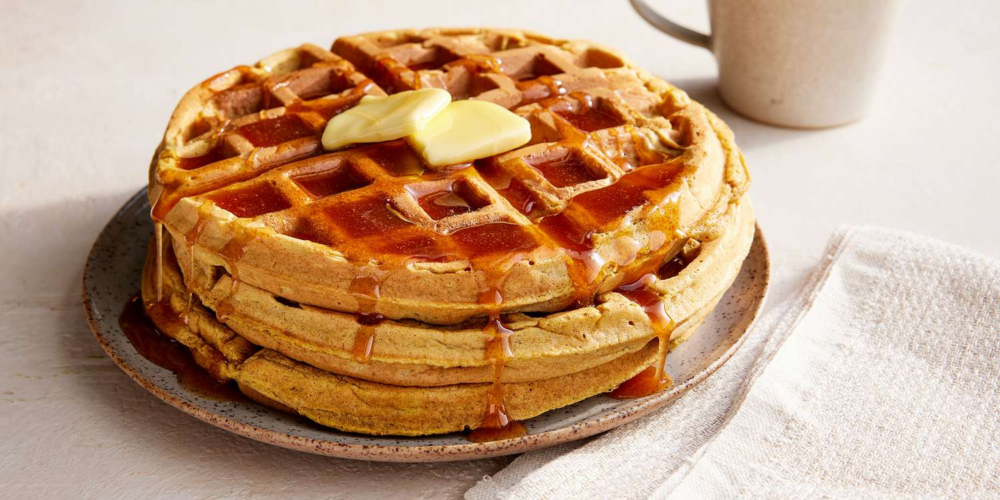

Pumpkin Waffles

Description
These light and tasty pumpkin waffles are served with a homemade apple cider syrup.
This recipe is a fall, winter, and special occasion family favorite.
The waffles are fairly easy to make and delicious — they're sure to please even picky eaters.
Ingredients
- 2 ½ cups all-purpose flour
- ¼ cup packed brown sugar
- 4 teaspoons baking powder
- 2 teaspoons ground cinnamon
- 1 teaspoon ground allspice
- 1 teaspoon ground ginger
- ½ teaspoon salt
- 2 cups milk
- 1 cup canned pumpkin
- 4 eggs, separated
- ¼ cup butter, melted